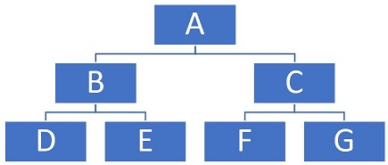

Binary Tree
Spring 2018: Question 40 (use C language to make this program)
Given an inorder traversal data and a preorder or postorder traversal data, make a program to produce a binary tree.
In preorder traversal, we visit the nodes first, then visit the left tree, and finally visit the right tree.
In inorder traversal, we visit the left tree first, then visit the nodes, and finally visit the right tree.
In postorder traversal, we visit the left tree first, then visit the right tree, and finally visit the nodes.
Suppose we have a tree as shown below:

The preorder traversal for this tree is ABDECFG.
The inorder traversal for this tree is DBEAFCG.
The postorder traversal for this tree is DEBFGCA.
Input instructions:
- Input four lines.
- For the first and third lines, input P for preorder traversal, I for inorder traversal, or O for postorder traversal.
- For the second and fourth lines, input the result of the traversal specified in the first or third lines.
Output instruction: Output the binary tree produced, from top to bottom, and from left to right.
| Sample Input | Expected Output |
|---|---|
|
P ABCDEFGHI I BCAEDGHFI |
ABDCEFGIH |